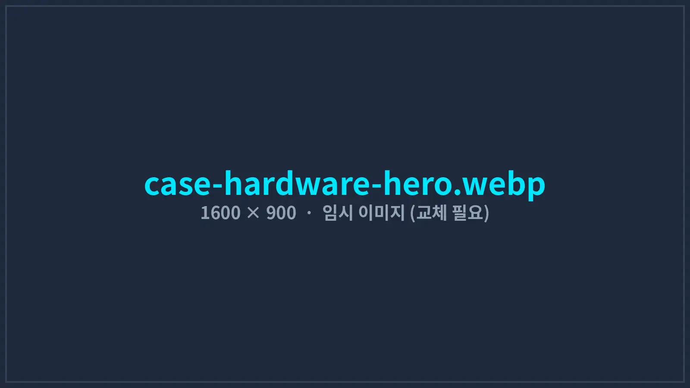
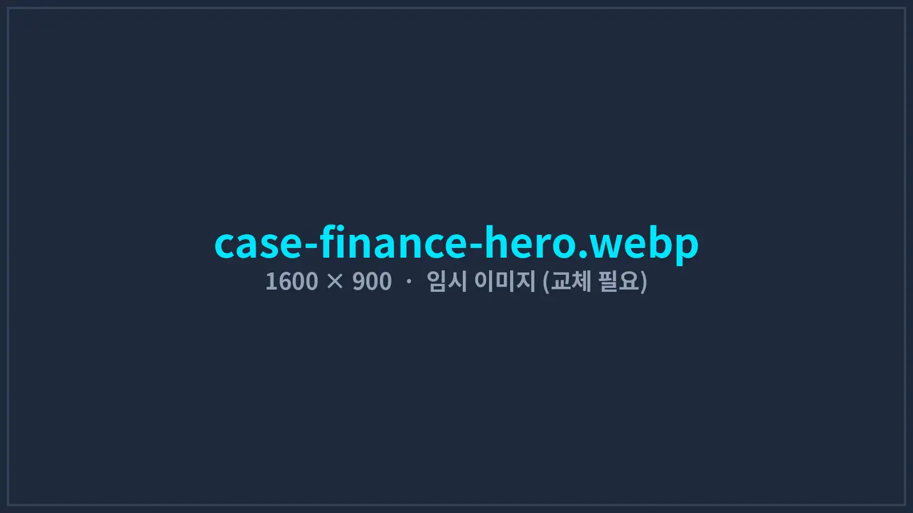
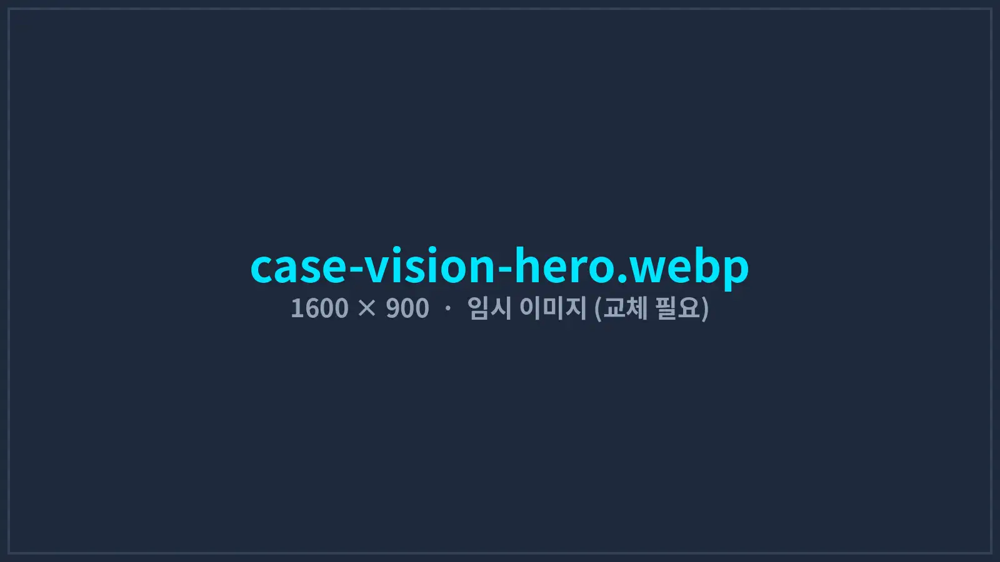

IMPLEMENTATION CASES
현장에서 매일 쓰이는 시스템을 만듭니다
데모가 아니라 실제 운영 중인 시스템의 구축 과정과 성과입니다. 모든 수치는 도입 전후를 같은 기준으로 측정했으며, 고객사 요청에 따라 회사명은 업종으로 표기했습니다.

교육 콘텐츠 채널 운영사 — 유튜브 영상 제작 자동화
엑셀 대본에서 AI 이미지, AI 음성, 자막, CapCut 편집 프로젝트까지 자동으로 이어지는 제작 파이프라인. 제작 인력을 늘리지 않고 발행량을 2.4배로 늘렸습니다.
9h→2.7h편당 제작5→12편주간 발행0원외부 녹음비
사례 자세히 보기

음향기기 ODM 제조사 — 7종 계측 장비 통합 검사 시스템
오디오 분석기, 전원공급기, 블루투스 모듈, PLC, 라벨 프린터를 하나의 검사 프로그램으로 연동하고 시리얼별 측정 데이터를 자동 기록합니다.
52→34초택트타임14→1건판정 오류1분이력 조회
사례 자세히 보기

투자법인 — 키움증권 국내·미국 주식 자동매매 시스템
국내장과 미국장을 하나의 프로그램이 관제하며, 스크리너·분할 주문·손절·일일 손실 한도를 규칙대로 자동 집행합니다.
0.4초주문 접수100%손절 이행25→3시간주간 야간 감시
사례 자세히 보기

식품 제조 공장 — 비전 AI 불량 검사 · 생산량 카운팅
컨베이어 위 파우치의 실링 불량·이물·날짜 인쇄 누락을 딥러닝으로 검출해 자동 배출하고, 생산 수량과 불량 이력을 DB와 ERP에 기록합니다.
97.8%검출률9→2건월 클레임0.05%집계 오차
사례 자세히 보기
성과는 이렇게 측정합니다
자동화의 효과는 “빨라졌다”는 느낌이 아니라 숫자로 확인해야 합니다. 모든 프로젝트는 착수 전에 고객사와 함께 측정 지표를 정하고, 도입 전과 도입 후를 같은 조건으로 비교합니다.
- 기준 기간 설정: 도입 전 최소 4주의 작업 기록을 측정해 비교 기준을 만듭니다.
- 같은 조건 비교: 같은 제품·같은 인원·같은 작업 범위로 비교하고, 계절이나 물량 변화가 큰 기간은 제외합니다.
- 측정 범위 공개: 제작 시간, 검출률 등 각 지표가 무엇을 포함하고 무엇을 제외했는지 사례마다 함께 적습니다.
- 병행 운영 검증: 기존 방식과 새 시스템을 일정 기간 함께 운영해 결과가 일치하는지 확인한 뒤 전환합니다.
비슷한 고민이 있으신가요?
업무 흐름을 알려주시면 적용 가능성과 예상 효과를 먼저 정리해 드립니다.